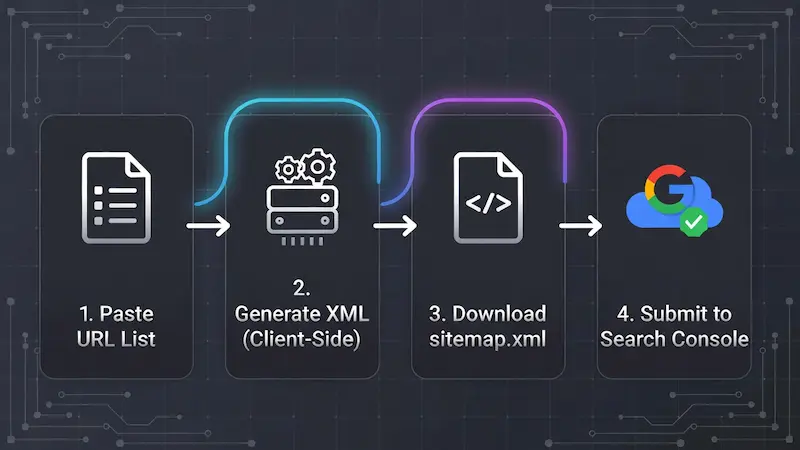

Bulk URL to XML Sitemap Generator
Transform your URL lists into Google-friendly XML Sitemaps instantly. Data never leaves your browser — 100% private & secure.
Tip: Upload this file to your website's root directory
(public_html) and submit the link to
Google Search Console.
Mastering XML Sitemaps: The Complete SEO Guide
Let's be honest — managing sitemaps for large websites is often a headache. Whether you are running an e-commerce store, a news portal, or a large blog, ensuring Google finds every single page is critical. That is exactly why we built this Client-Side Bulk Sitemap Generator. It strips away the complexity of server-side scripts and gives you a raw, fast, and secure way to build your XML files instantly.
Why "Crawl Budget" Matters for Your SEO
Many webmasters overlook the concept of Crawl Budget. Googlebot doesn't have infinite time to spend on your site. If your site has thousands of URLs, you want the bot to find the important ones fast.
By generating a clean XML sitemap with our tool, you are essentially handing Google a map. This ensures:
- Faster Indexing: New posts get discovered minutes or hours after publishing, not days.
- Deep Linking: Orphan pages (pages with no internal links) finally get a chance to rank.
- Resource Efficiency: You save your server bandwidth by guiding bots directly to valid URLs.
Step-by-Step: What to Do After Generating?

Process Flow: Generate → Download → Upload → Index
Simply creating the file isn't enough. Follow this checklist to ensure maximum impact:
- Download & Rename: Save the XML file. Ideally, name it
sitemap.xml. - Upload to Root: Access your hosting file manager (cPanel or FTP) and upload the file to the
public_htmlfolder. - Verify the Link: Visit
yourdomain.com/sitemap.xmlin a browser to confirm it loads. - Submit to GSC: Log in to Google Search Console, go to the "Sitemaps" tab, and submit the URL.
Optimising Your Settings (Best Practices)
This tool gives you granular control over metadata. Here is how experienced SEOs configure these settings:
- Last Modified (LastMod): Highly recommended. Use 'Today' if you just updated content. It tells Google the content is fresh.
- Priority Tags: While Google has stated they often ignore priority tags, other search engines like Bing still use them.
Set
1.0for your Homepage,0.8for categories or service pages, and0.5or lower for standard blog posts.
Frequently Asked Questions (FAQ)
My file has over 50,000 URLs. What should I do?
According to the Sitemaps.org protocol, a single XML file cannot exceed 50,000 URLs or 50 MB in size. If you have more links, use our tool to generate multiple files (e.g., sitemap1.xml, sitemap2.xml) and then create a "Sitemap Index" file to link them all together.
Does this tool support Image or Video Sitemaps?
Currently, this tool focuses strictly on standard URL sitemaps for web pages. Image and video extensions require specific metadata (like captions and licenses) that are difficult to automate via a simple bulk URL list.
Why is my sitemap showing errors in Search Console?
Common errors include "Namespace missing" or "Invalid XML tag." Our tool automatically
handles the correct XML namespaces (xmlns), so the structure is always valid.
If you see errors, check if you accidentally pasted broken URLs or empty lines in the input
box.
XML vs. HTML Sitemaps: What is the Difference?
A common confusion among beginners is the difference between these two types. Understanding which one serves which purpose is key for both SEO rankings and reader experience:
XML Sitemap (For Bots)
Purely for search engines (Google, Bing). Contains metadata like timestamps and priority. Humans are not supposed to read this. This tool generates this type.
HTML Sitemap (For Humans)
A regular page on your website listing all links. Helps visitors navigate. While good for UX, it doesn't give Google technical data like "last modified" dates.
Troubleshooting: "Couldn't Fetch" Error in Search Console
Did you upload your sitemap but Google Search Console (GSC) says "Couldn't Fetch"? Don't panic. This is rarely a fault with the XML file itself. Here is how to fix it:
- The "Pending" Bug: Often, GSC says "Couldn't Fetch" when the status is actually "Pending." Wait 24–48 hours.
- Check Robots.txt: Ensure your
robots.txtfile isn't blocking the sitemap URL. It should contain:Allow: /sitemap.xml. - Caching Issues: If you use Cloudflare or a caching plugin (like WP Rocket), clear your cache after uploading the new file.
Universal Compatibility
One of the biggest advantages of using a standalone XML Generator is compatibility. Plugins can bloat your site or conflict with themes. A static XML file generated here works on absolutely every platform:
By keeping your sitemap logic separate from your CMS, you ensure that a plugin update never accidentally breaks your SEO structure.
Beyond Basics: When Do You REALLY Need This Tool?
Most people think sitemaps are "set and forget." That's a mistake. There are specific scenarios where manually regenerating your sitemap via this tool is crucial for saving your rankings:
During Site Migrations
Moving from HTTP to HTTPS? Or changing your domain name? Google needs to know about the new structure immediately. Generating a fresh sitemap with your new URLs helps Google swap the old links for the new ones much faster, minimising traffic drops.
Content Pruning (Deleting Old Pages)
If you delete low-quality posts to improve your site's health, those URLs might still linger in Google's index. By updating your sitemap and resubmitting it, you force Google to re-crawl and realise those pages are gone (404), cleaning up your search presence.
The "Orphan Page" Problem
An "Orphan Page" is a page on your website that has zero internal links pointing to it. Because no menu or blog post links to it, Googlebot often fails to find it.
This usually happens with landing pages for ads or specific marketing campaigns. By pasting those elusive URLs into our Bulk Converter, you explicitly tell Google: "Hey, this page exists, please index it," bypassing the need for internal linking structures.
Static Files vs. CMS Plugins: Why Use This Tool?
If you use WordPress or Shopify, you might ask: "Why shouldn't I just use a plugin?" While plugins are convenient, they come with a hidden cost — Performance.
Plugins generate sitemaps dynamically. Every time Googlebot hits your sitemap URL, your server queries the database. This slows down your site. A static XML file generated by our tool serves instantly with zero database load.
Some plugins expose your website's version number or author details in the sitemap header. Our tool creates a clean, raw XML file that reveals nothing about your backend technology.
The Truth About "Priority" & "Changefreq" Tags
The "Priority" Tag (0.1 to 1.0): Many webmasters think setting everything
to 1.0 will make Google rank them higher. It won't. Google
has officially stated they mostly ignore this tag. However, it is still useful for
relative importance.
The "Changefreq" Tag: Be honest here. Do not set "Daily" if you only update your content once a month. If search bots visit daily and see no changes, they may start visiting less frequently in the future. Accuracy builds trust with search engines.
Handling "Non-Standard" URLs
Modern web development is complex. You might have URLs with parameters like
?product_id=123 or hash fragments like #section2.
?utm_source=facebook) before generating your sitemap. Including these
can lead to "Duplicate Content" penalties. Our tool processes raw lists, so ensure your
input list is clean (canonical URLs only) for the best results.
Initializing secure discussion portal...